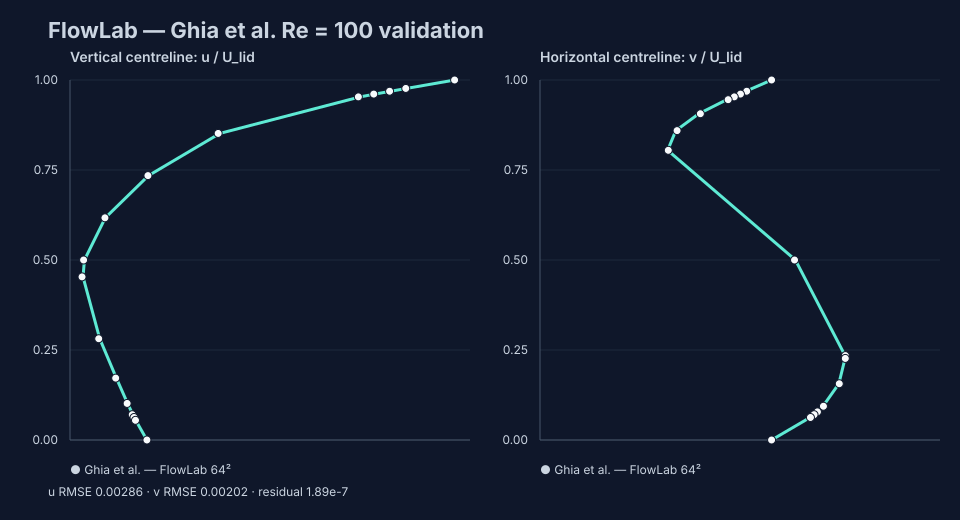

FlowLab: browser-native lattice-Boltzmann validation
D2Q9 · BGK collision · halfway bounce-back · lid-driven cavity at Re=100
Question
Can one dependency-free implementation run unchanged in Node.js and a browser while reproducing a canonical reference quantitatively?
Method
The solver uses a single-relaxation-time D2Q9 lattice, second-order equilibrium, pull streaming, halfway bounce-back walls, and a moving-lid momentum correction. Density and velocity moments are recomputed after collision and streaming. Validation runs three square grids at matched Reynolds number and samples both geometric centreline velocities at the published coordinates.

Results
| Fluid grid | Iterations | u RMSE | v RMSE | Residual |
|---|---|---|---|---|
| 32² | 14,750 | 0.00511 | 0.00404 | 1.85e-7 |
| 48² | 22,000 | 0.00369 | 0.00208 | 1.91e-7 |
| 64² | 27,500 | 0.00286 | 0.00202 | 1.89e-7 |
All grids converged below the declared residual gate. The 64² case reached u-centreline RMSE 0.00286 and v-centreline RMSE 0.00202 against Ghia et al. Both are below 1% of lid speed; relative mass drift is 2.56e-12.

Acceptance
- PASS — every grid converged.
- PASS — finest u and v centreline RMSE are each below 0.01 lid-speed units.
- PASS — relative mass drift is below one part per billion.
- PASS — the browser uses the same solver module exercised by Node.js validation.
Limitations
This is a low-Reynolds, two-dimensional, laminar benchmark. BGK collision on a uniform grid is not a replacement for finite-volume RANS, LES, complex external geometry, or production boundary treatment. The result establishes implementation discipline and cross-runtime reproducibility, not industrial CFD fidelity.
Source
Ghia, Ghia & Shin (1982), Journal of Computational Physics 48(3), 387–411
Generated from results/validation.json; no metric is hand-entered into this report.